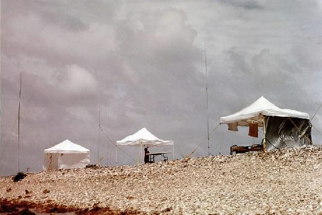
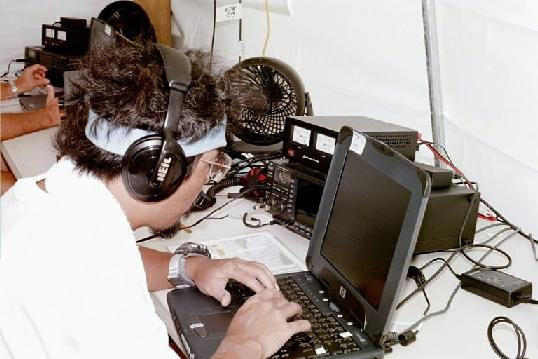
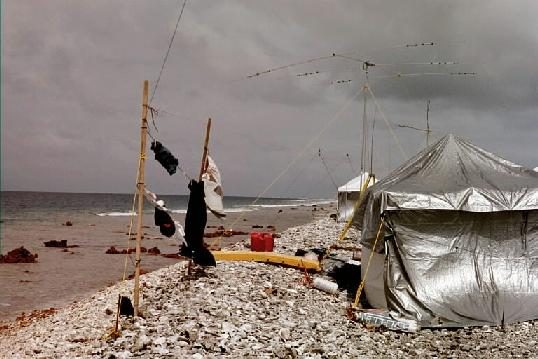
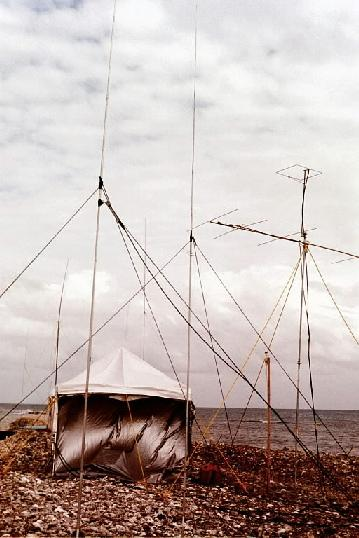
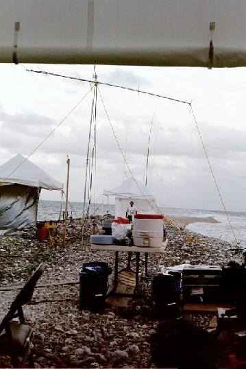

K5K Kingman Reef


(2000.Oct.22-31)
2000年10月22-31日にKH5K(Kingman Reef)から運用したK5K
日本からJH7OHF・小野さんがメンバーの一員として参加した。
2000年10月22-31日にKH5K(Kingman Reef)から運用したK5K
日本からJH7OHF・小野さんがメンバーの一員として参加した。



6mでの総QSOは995(JA局・785)、エンティティは12だった。
JAの"ファーストエバー"はJA8JRC、最終交信はJS6CDB。
各エリアのQSO数と、1st QSO局は次の通り。
1. JE1BYU 241 6. JA6WPT 103
2. JA2JW 123 7. JE7ETY 78
3. JJ3WXG 47 8. JA8JRC 68
4. JA4ZA 43 9. JA9CGR 22
5. JF5NTT 29 0. JH0BQX 31
計 785
(QSO数はDupe & 2 Modeを含む)



